First, let's examine the distribution of stations in my definition of the Midwest by plotting a point for each station on the map. I color the points by the average maximum 5-second sustained wind speed, which I define here as a "gust", to get a handle of the wind topography of the region. The stations mostly cluster in cities (see the noticable clusters near Dallas, TX, Oklahoma City, OK, St. Louis, MO, etc) and many stations are located at airports, where regular weather measurements are required. From the point colors, we can see that the gust speed is on average faster in the western "plains region" of the Midwest, the flat farm lands in north Texas, western OK, KS, NE, and SD.
Assignment 2: Exploratory Data Analysis
David Fleming — dflemin3@uw.edu
Dataset: Weather Measurements in 2017
The dataset I chose contains daily weather measurements at U.S.-based weather stations in 2017. The dataset, assembled by the National Oceanic and Atmospheric Administration (NOAA) Daily Global Historical Climatology Network, includes information regarding the temperature, precipitation accumulation, wind speed and direction, and snow accumulation and depth for 100s of station in all U.S. states and territories. As a native of the Midwest, I grew up hoping for snowstorms to force school cancellations in the winter, and watching intense early-summer thunderstorms roll across town. Severe, and often variable weather, is a cornerstone of life in the Midwest, and I hope to capture and analyse these phenomena. This rich dataset provides an opportunity to examine extreme Midwestern weather with exquisite spatial and temporal precision. My analysis will focus on the four main facets of punishing Midwestern weather: rain, wind, heat, and snow. Note that in this analysis, I consider the Midwest to consist of South Dakota, Iowa, Nebraska, Kansas, Missouri, Oklahoma, and North Texas (north of Austin, TX). There are many definitions of what states belong in the Midwest (what about North Dakota, Illinois, Minnesota, why any part Texas, at all?), but my definition looks at the "Midwest" where the extreme weather most commonly occurs, a subset of the region commonly referred to as "Tornado Alley".
The data is available online as a compressed csv file at: weather.csv.gz
Initial Analysis Questions
- Overarching Question: What can daily weather data reveal about extreme weather in the Midwest?
- Which regions in the Midwest undergo the strongest wind storms?
- Can I map severe Midwestern storms using daily wind speed and rain data?
- Can one identify tornados based off of the daily wind speed and rain data?
- Where, and under what conditions, do Midwestern blizzards occur?
- Which areas experience the highest temperatures and most extreme temperature differences?
Discoveries & Insights
My analysis begins with examining the location of weather stations in my definition of the Midwest. I then examine different aspects of Midwestern extreme weather, from winds to rain to snow to heat and temperature variations. For each aspect, I start with a simple visualization, then refine each one and incorporate more data to understand the data and the question. I used Tableau to create all my visualizations.
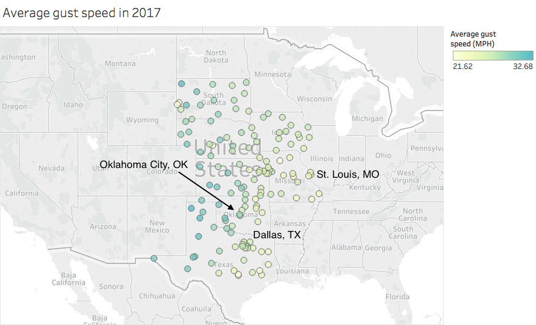
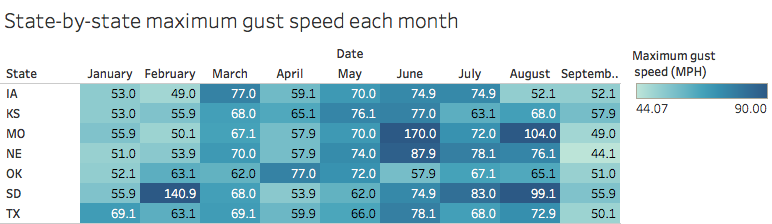
Given the trends seen in the previous figure, let's examine the maximum gust speed recorded by a station in each state for each month to identify where and when the most intense gusts occur (note that the table redundantly encodes maximum gust speed by color and value for clarity). I display the maximum recorded gust speed by a station in each state and cut the color for maximum speed at 90 MPH, a rough minimum speed required for a windstorm to be a tornado (see the Fujita Scale). Most states seem to have the most intense gusts from May-August (tornado season?) and several states had stations record extreme gusts in excess of 90 MPH, potential tornados. Note that in this dataset, we do not have data for October, November, or December, so our analysis is limited to the Winter, Spring and Summer months.
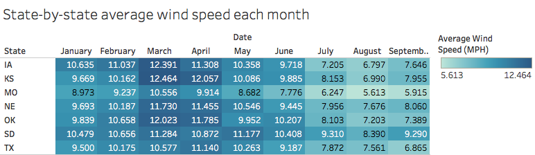
Similar to the previous figure, I plot the average wind speed each month, for each state to see if it correlates with the maximum gust speed. For all states, the average wind speeds peak from around February to May, with South Dakota consistently having fast average wind speeds. One would expect faster gust to occur when the average wind speed is high, if there are more storms in the region, for example, but that does not seem to be the case for any state, except maybe South Dakota.
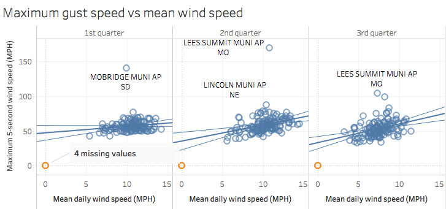
To examine the maximum gust speed (maximum 5-second wind speed) and average wind speed correlation further, we plot these two quantities for all stations (some labeled) in our sample for 3 quarters, Winter, Spring, and Summer, and plot trend lines, with errors. There are several stations that did not record any wind speed information (colored in orange), so I put those points at the origin. There does not appear to be a correlation during the Winter months (Q1), but there is a weak positive correlation during the Spring and Summer (Q2, Q3, respectively). A positive correlation makes sense since naively, one would expect stronger gusts to occur when the average wind speed is high, perhaps because the strong gust raises the average wind speed. The tornado candidates appear as clear outliers.
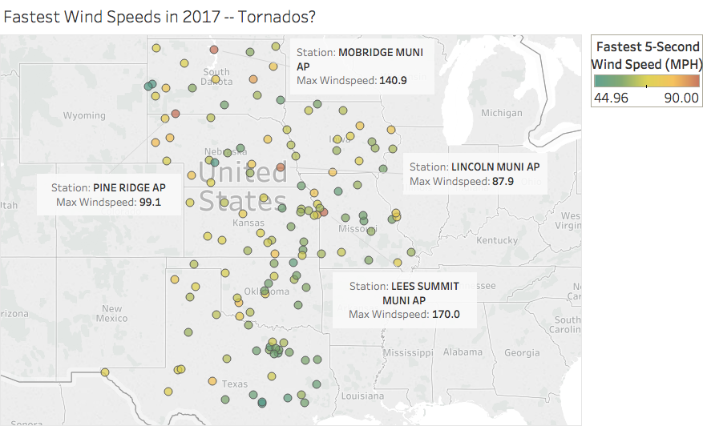
What about extremely strong wind gusts at individual stations in 2017; can we identify tornados? I plot the location of all the stations and color them by the maximum recorded wind gust and identify the stations with the fastest gusts. There are several with gusts of at least the threshold for a tornado, about 90 MPH, with two stations recording gusts in excess of 100 MPH, with one recording a gust of 170 MPH at Lee's Summit Municipal Airport in Missouri. Either these are errant data, extreme gusts, or tornado detections!
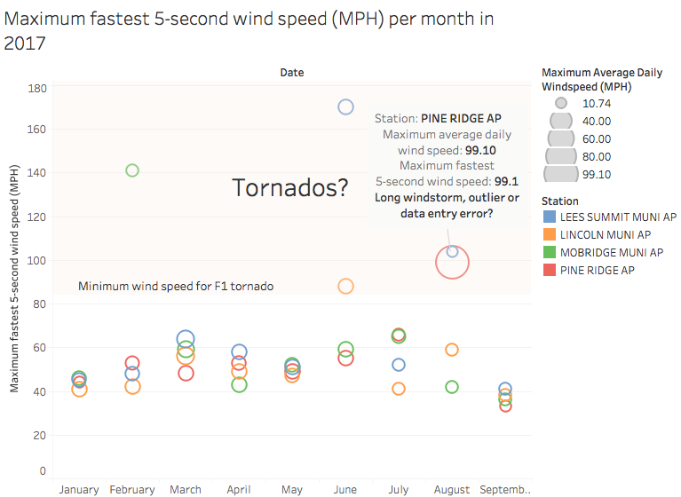
Next, let's probe the data quality at the 4 stations with the fastest gusts in 2017 by examining their fastest recorded gust speeds over each month. The points are colored by station and the point sizes indicate the maximum average daily wind speed recorded by that station in that month. The tornado candidates, station maximum gust speeds exceeding about 90 MPH, clearly stand out amongst the seasonal wind speed trend. Three appear like real tornado candidates, but the Pine Ridge Airport's maximum recorded gust speed equals the maximum average daily wind speed, so unless there was a tornado-like storm all day, that data point is probably an error.
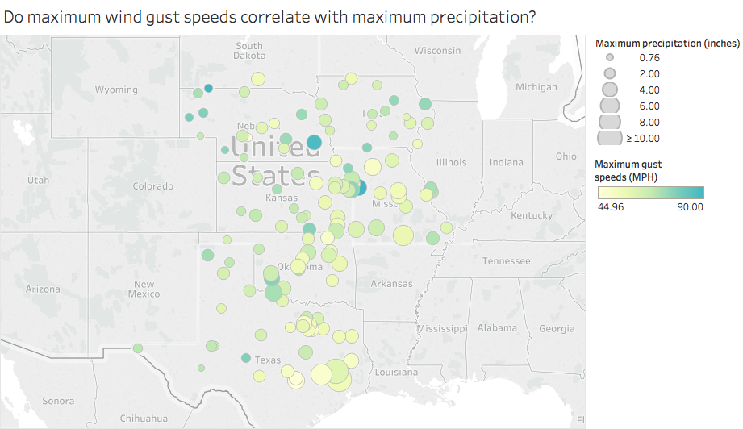
Severe storms that produce high winds, and potentially tornados, often unlease torrential rains. To see if this trend is reflected in the data, I plot, for each weather station, the maximum precipitation recorded in a day as the station point size and color the points by the maximum recorded gust speed. Note that typically precipitation includes snow, but in this dataset, precipitation corresponds to rain and/or melted snow (see here for more info). The stations that record the most rain are at the Southern end of my latitude cut in Texas by the Gulf of Mexico and are likely recording rain from tropical storms, especially given the low gust speeds, a hallmark of sub-hurricane level winds. Although several stations that record lots of rain also measure strong gusts, like in southern Oklahoma and southeastern Nebraska, there does not appear to be a strong link between maximum gust speeds and maximum precipitation. Note that most stations in South Dakota are missing maximum precipitation data.
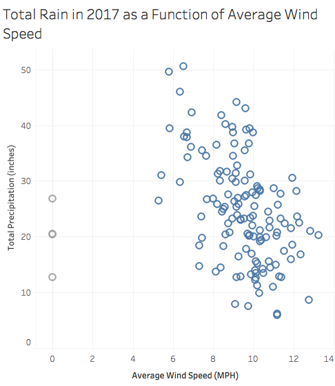
If the maximum rain recorded in a day does not correlate with the maximum recorded gust, does total rain accumulation correlate with average daily wind speeds (plotted above, for each station)? Note that several stations did not record average daily winds speeds, so I colored these points in grey to distinguish them from the rest of the dataset. There is a noticable negative correlation between total precipitation and average daily wind speed suggesting that windier areas get less rain, altough there is a significant amount of scatter. This correlation is could be biased, however, as not all stations record data at the same cadence, so stations with more records could record more rain than an equally-rainy location with less records.
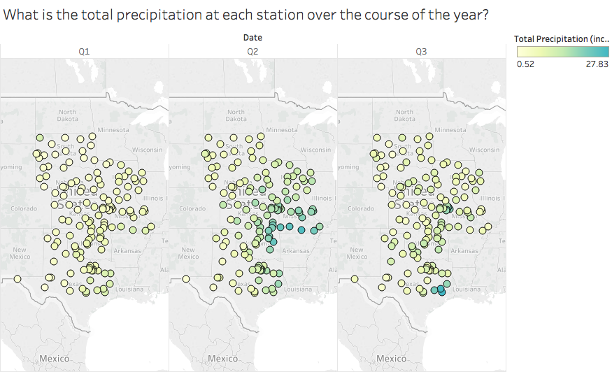
Previously we saw that the maximum gust speeds and highest average daily wind speeds occured in the Spring and Summer, so here I plot the total recorded precipitation (color) for each station over the three seasons (quarters) to see if there is a similar trend. There is little precipitation during the Winter, which makes sense since in the Midwest at that time of year, it is likely cold enough that any precipitation would be recorded as snow. There is substantial amounts of rain recorded in Southern Missouri near the MO-OK-KS border in the Spring, corresponding to thunderstorms that frequently roll through this area during the late Spring, and Texan stations near the Gulf of Mexico receive a substantial amount of rain in the Summer. Seasonal rain totals seem to align with the maximum gust speeds displayed above, but its not clear if severe weather is the root cause.
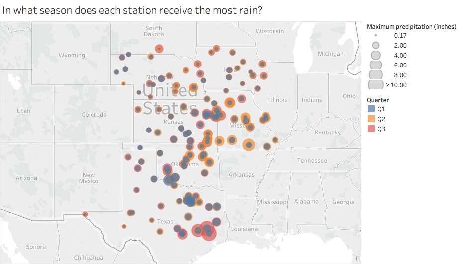
To examine how severe storms contribute to the stations' rain totals, I plot the maximum recorded rain totals during the Winter, Spring, and Summer (Q1, Q2, and Q3, respectively) for each station. In Missouri, Kansas, and Oklahoma, severe storms dumped a maximum of about 5 inches of rain during the spring, perhaps during the same storm front, while intense rains accumulated about 8 inches in Texas near the Gulf of Mexico. Note that most stations in South Dakota are missing maximum precipitation data.
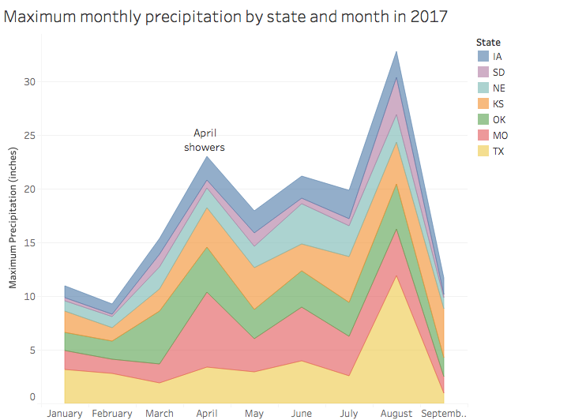
Now I plot maximum monthly precipitation recorded in each state by month to see when each state receives the most of its rain. We see clear peaks in April from Missouri's April showers, and in August from the Texan Gulf of Mexico rain storms seen earlier. Both South Dakota and Iowa have few intense storms that drop a lot of rain, while Missouri, Oklahoma, and Texas all have numerous storms that drop inches of rain at a time. There is an overall trend towards more intense rain storms as the year progresses. To match the low Winter maximum rain amounts, I anticipate that the missing Fall data would show a decline in rain amounts.
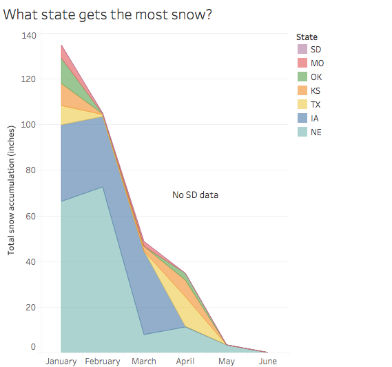
Now I examine a different type of precipitation, snow, by plotting the state-by-state snow totals, again assuming that each state's stations totals contribute to the state's total. As discussed previously, this quantity could be biased as not all weather stations have the same amount of records, and not all states have the same amount of stations, so states with more stations and more frequent measurements could artificially appear snowier. Both Iowa and Nebraska dominate the snow totals with most of this snow falling during January and February. South Dakota would presumably receive even more snow since it is north of both of those states, but there was no snow data for South Dakota. I truncated this figure at June as no state recorded appreciable snow once the Summer began since as temperatures rise, any precipitation will obviously fall as rain. The record and station count bias does not significantly impact this chart's conclusions as both Iowa and Nebraska have some of the fewest station counts, so their totals are not likely inflated relative to other states.
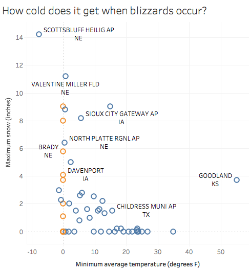
Given the state-by-state monthly totals, let's look at individual stations to see under what conditions blizzards occur, as we expect them to occur in states with the most snow accumulation. To do so, I plot maximum snow accumulation as as a function of minimum average temperature. Many stations did not record minimum temperatures or snow accumulations and are shown in orange. As expected, appreciable snow measurements are recorded for minimum temperatures below freezing (32 degrees F). The Scottsbluff, NE station had a particularly intense blizzard with over 14 inches of snow and a sub-zero minimum temperature. Many stations in Texas got cold enough for snow, but none was recorded.
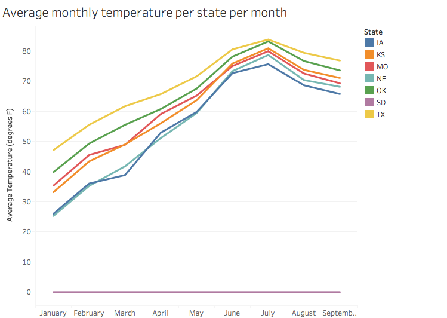
Now to pivot to examine Midwestern temperatures, I plot the average monthly temperatures for each state based on station-by-station data for each month (note that the South Dakota data is incomplete and set to 0). As expected, temperatures are lowest during the Winter and peak during the Summer with the most southern states reaching the highest temperatures, i.e. Texas, and the northern-most states reaching the lowest temperatures (Iowa).
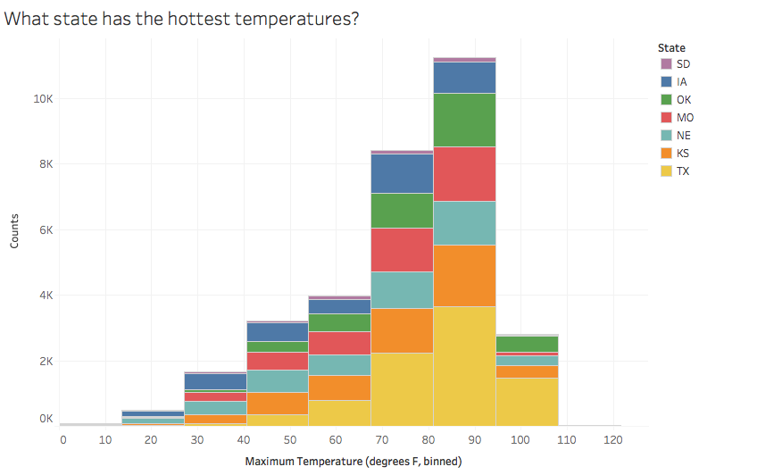
Midwestern temperatures can get brutally hot, so I plot a stacked histogram of recorded high temperatures for each state, sorted by the number of records. Texas dominates the temperature highs with many maximum temperatures populating the 100-110 degrees F bin! Most states' maximum temperatures range from 70-95 degrees F with the mode of the distribution located around 90 degrees F. From the previous figure (and experience), we know that the temperature peak in the summers, so most of these temperature highs are in the summers, allowing me to derive an obvious conclusion: Midwestern summers get quite hot.
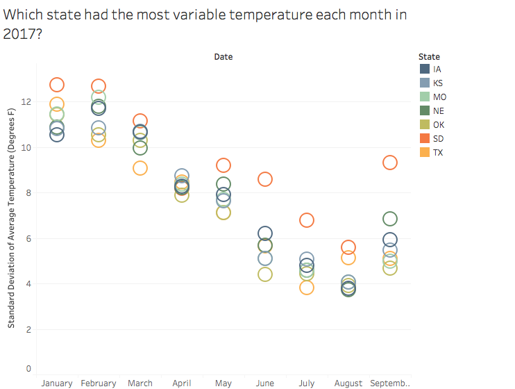
In this figure, I visualize how variable temperatures can be across a state by plotting the standard deviation of a state's stations average temperature measurements for each month. Interestingly, temperatures are most variable during the Winter months and least variable during the Summer months. South Dakota consistently has the most variable temperatures with other flat plains states, Iowa and Nebraska, also having higher variability than other Midwestern states.
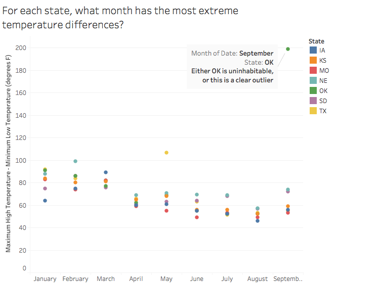
As an additional measure of temperature variability, I compute the difference between the maximum and minimum temperature for each state for each month. I plot the maximum recorded value from a station in each state to probe what were the most extreme observed temperature swings. Again, states have the most variable temperatures during the winter with temperature differences of about 70-80 degrees F, massive temperature swings over the course of a month! In September, a station in Oklahoma recorded a maximum temperature difference of about 200 degrees F, a swing from -100 to 100 degrees F! This has to be an error, or Oklahoma is uninhabitable.
Summary
This daily weather dataset provides a deep insight into extreme Midwestern weather allowing for rich characterization of extreme temperature, temperature swings, snow, rain, winds, and can even help identify tornados. Extreme winds and rains seem to preferentially occur during the Spring and Summer months and near the Oklahoma-Kansas-Missouri border. Using the granular station wind data, I was able to identify 4 tornado event candidates and was able to rule out one as likely errant data. I found that Iowa and Nebraska experienced the most snowfall and that the most extreme temperature swings occur during the Winter months.